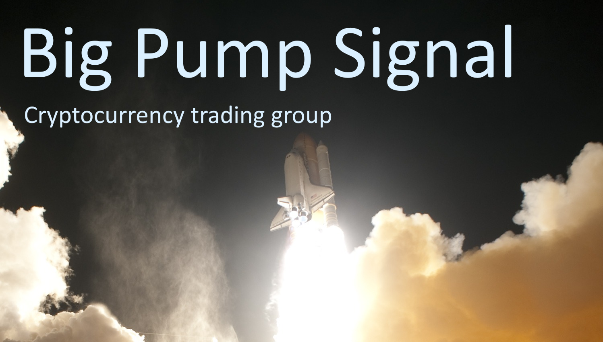

The aim of this Big Pump Signal review is to provide you with some insight into the way that they operate to help you in deciding as to whether or not this is something you should be getting involved in. Considering the potential profits that are at stake, it makes so much sense to do your research first, so let’s get into it.
Big Pump Signal is a pump and dump group dedicated to helping its followers to pump and dump different altcoins that are on the market. In this respect, they are no different to other similar groups that are out there as they all have the exact same aim, which is to boost the profits of those individuals that are in the group.

The Size of the Group.
Big Pump Signal state that they are the biggest group of its kind in the world, which is a pretty big statement to make all things taken into consideration. By all accounts, they have somewhere in the region of 50,000 followers, and that does mean that if everyone comes together for the same pump and dump that they can have a major impact on the market for any cryptocurrency that they plan to focus on.
What are Their Main Aims?
The main aim of the group is to change the price of the cryptocurrency that they are focusing on, and it runs along the same lines as every other pump and dump group that is out there. They keep their members in the loop with what is going on via their social media accounts, including their Telegram channel, so people know what to purchase, and when they should be looking at making that investment.
So, in that respect, they are not doing anything special or different to everything else that runs along similar lines.
Furthermore, they choose the coins that they will focus on in the same manner as well with the main idea being that a coin is chosen simply because it has real potential and there is a very real possibility of the price being manipulated in the process. However, this in itself is not ground-breaking, and is still no different from other options that are on the market.
Additional Features on the Platform.
In addition, Big Pump Signal does provide a number of other features on their platform that will help to make the entire process that bit easier, as well as providing a way to further increase the profit that you can make. Features include protection from bots, an affiliate system, and a crypto chat where people can be kept up to date on everything that is going on, as well as vote on the next moves.
Even though this does impressive, it needs to be stressed that this is still no different from every other pump and dump group out there and it is merely the size of the group that is making a huge difference.
That being said, a number of the features that they have are certainly required for everything to kind of work without any interference. Take the bot protection as a prime example, there is such a risk associated with bots basically ruining the pump aspect that there has to be some kind of protection from it. The key area has to be when the coin is announced as bots can pick up on that kind of announcement and then steal the show and ruin the entire pump.
That is why they use a CAPTCHA format when it comes to this announcement. By doing this, it cannot be read by a bot, and it is such a simple solution for something that is potentially a huge, and very costly, problem.
Is It Worth Joining?
So, here’s the important part, is it worth joining this particular pump and dump group? Well, forget for a moment that the key parts in what they offer are the same as you will get anywhere else as that is less important than you may think at this moment in time.
Instead, we need to look at it from a different perspective. Yes, there are a lot of people in the group, and that kind of co-ordinated attack will make a huge difference to the movement of the currency, but how many people actually take part at any given time? There is also the issue of voting for the next move because with a group of this size it takes some organizing, but it is certainly something that they have got running smoothly.
Of course, you have no pressure placed upon you for the amount of money that you spend on the pump, so having no minimal investment figure to take part is certainly a positive. The reason for that is they simply look at the group size rather than anything else, and as they have a lot of people involved then the individual amounts matter less than you would perhaps imagine.
Finally, it’s free to join, so there is basically no risk at all as you can sign up, check out what is going on, and then make your decision as to whether or not you are going to take part. No pressure and no threat of being kicked out if you decide you do not want to take part in the next movement.
So, to bring this review to an end, we have to say that their group runs smoothly, and there is no doubt that if you follow the rules then there is real potential to go ahead and make a profit. Yes, there are issues and concerns but that is more to do with the nature of the cryptocurrency market rather than anything else.
Joining a pump and dump group makes so much sense, and if you are serious about cryptocurrency trading, then this is certainly one road that you might want to go along. Just be sure that you only purchase with money that you know you can afford to lose to avoid running into any additional problems.